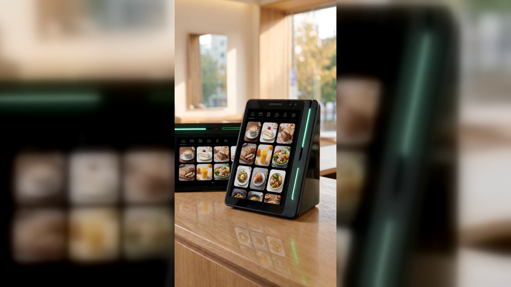

네이버페이 커넥트, 매장 공사 없이 카운터 자리 하나면 설치됩니다
새 단말기 이야기를 꺼내면 사장님들이 가장 먼저 물으시는 것은 기능이 아닙니다.
"그거 놓으려면 뭘 뜯어야 하냐"입니다.
상담을 하다 보면 순서가 늘 비슷합니다.
기능 설명은 고개를 끄덕이며 들으십니다. 결제도 되고, 리뷰도 붙고, 단골 관리까지 된다는 말까지는 좋습니다.
그런데 마지막에 꼭 이 질문이 나옵니다.
"카운터를 다시 짜야 하나요."
"기둥 세우고 배선 새로 빼야 하는 거 아닌가요."
"장사하는 중에 공사하면 손님은요."
이 걱정이 남아 있으면 아무리 좋은 기능도 뒤로 밀립니다.
매장은 하루도 멈추기 어려운 곳이고, 사장님께 공사는 곧 매출이 빠지는 시간이기 때문입니다.
그래서 도입이 늦어지는 진짜 이유는 기기가 마음에 안 들어서가 아니라, 설치가 어떤 일인지 그림이 안 그려져서인 경우가 많습니다.
지금까지 매장에 들어온 장비들이 대개 그랬기 때문입니다.
큰 본체, 따로 세우는 기둥 스탠드, 카운터 아래로 넘어가는 선들.
한 번 자리를 잡으면 위치를 바꾸기도 어렵고, 카운터 배치를 장비에 맞춰야 하는 일도 있었습니다.
그러다 보니 "단말기 바꾼다 = 카운터를 손본다"라는 생각이 자연스럽게 굳었습니다.
네이버페이 커넥트는 그 전제부터 다릅니다.
유광 검정의 쐐기 모양, 커피컵 정도 높이의 작은 기기입니다.
따로 세워야 하는 기둥 스탠드가 없습니다. 카운터 위에 올려두는 물건입니다.
화면이 둘이라 사장님이 보시는 세로 화면과 손님이 보는 작은 화면이 한 몸에 들어 있고, 옆면의 초록 LED 한 줄로 지금 상태가 보입니다.
그래서 사장님이 준비하실 것은 카운터 한쪽의 자리 하나입니다.
정리하면 이렇습니다.
자리는 계산대 한쪽, 손님과 마주 보는 방향이면 충분합니다.
기기가 작으니 손님 동선을 막지 않고, 필요하면 위치를 옮겨 잡기도 쉽습니다.
카운터 구조를 기기에 맞추는 것이 아니라, 기기를 지금 카운터에 맞춰 놓는 쪽입니다.
설치는 누리네트웍스가 직접 나갑니다.
수도권은 직영 설치입니다. 중간에 다른 업체를 거치지 않고, 저희 사람이 매장에 방문해 자리를 잡고 켜 드립니다.
설치하러 간 사람이 그대로 사용법까지 알려드리는 것도 직영이라 가능한 부분입니다.
결제 화면은 어디를 보면 되는지, 손님 쪽 화면에는 무엇이 뜨는지, 그 자리에서 한 번 같이 해보고 나오는 것이 원칙입니다.
방문 일정은 상담 때 매장 사정에 맞춰 잡습니다.
점심 장사 중에 사람이 들이닥치는 일이 없도록, 한가한 시간대를 여쭙고 맞춥니다.
켜고 나면 네 가지가 한 기기에서 함께 돌아갑니다.
첫째, 결제입니다.
카드, QR, 페이스사인, 삼성페이까지 손님이 원하는 결제 수단을 받습니다. 위챗페이·알리페이플러스 같은 해외 결제도 같은 기기에서 처리됩니다.
둘째, 리뷰입니다.
결제가 끝나면 네이버 리뷰로 자연스럽게 이어집니다. 손님은 "커피가 맛있어요" 같은 키워드를 고르기만 하면 되고, 포인트 적립과 쿠폰이 함께 붙습니다.
사장님이 따로 리뷰를 부탁하지 않아도 됩니다.
셋째, 마케팅입니다.
결제 데이터로 손님 취향을 파악해 쿠폰과 적립, 맞춤 혜택이 자동으로 나갑니다. 한 번 온 손님을 다시 부르는 쪽입니다.
넷째, 홍보입니다.
손님이 매장에 머무는 동안 새 메뉴나 이벤트 소식을 손님 쪽 화면으로 알립니다.
설치가 끝난 그날부터 이 네 가지를 그대로 쓰시면 됩니다.
따로 배워야 하는 프로그램이 있는 것이 아니라, 평소처럼 결제를 받으시면 나머지가 뒤에서 따라옵니다.
네이버 공식 안내에도 앞으로 매장 운영에 도움이 될 새로운 기능이 추가될 예정이라고 되어 있습니다(일부 서비스는 오픈 준비 중입니다).
도입에서 막히는 지점이 설치라면, 그 부분은 저희 몫입니다.
사장님이 하실 일은 카운터에 자리 하나를 봐두시는 것까지입니다.
매장을 뜯을 일도, 기둥을 세울 일도 없습니다. 놓고 켜면 시작됩니다.
궁금한 점은 상담에서 매장 사진 한 장만 보여주셔도 됩니다.
카운터를 보면 어디에 놓는 것이 좋을지, 손님 동선은 어떻게 되는지 먼저 말씀드릴 수 있습니다.
정품 신제품 보증 · 수도권 직영 설치.
누리네트웍스
누리네트웍스 · 결제는 더 쉽게, 매장은 더 스마트하게
🔗 https://nwpos.co.kr?utm_source=youtube&utm_medium=social&utm_campaign=daily7&utm_content=connect-start
#네이버단말기 #네이버커넥트 #Npay커넥트 #네이버페이단말기 #네이버리뷰 #매장리뷰 #매장홍보 #단골관리 #쿠폰적립 #포인트적립 #사인패드 #결제단말기 #카드단말기 #포스기 #포스 #간편결제 #카드결제 #매장운영 #매장관리 #자영업 #소상공인 #자영업노하우 #개인사업자 #가맹점 #창업준비 #누리포스 #누리네트웍스 #Shorts
[SNS아이콘]
[SNS배너]